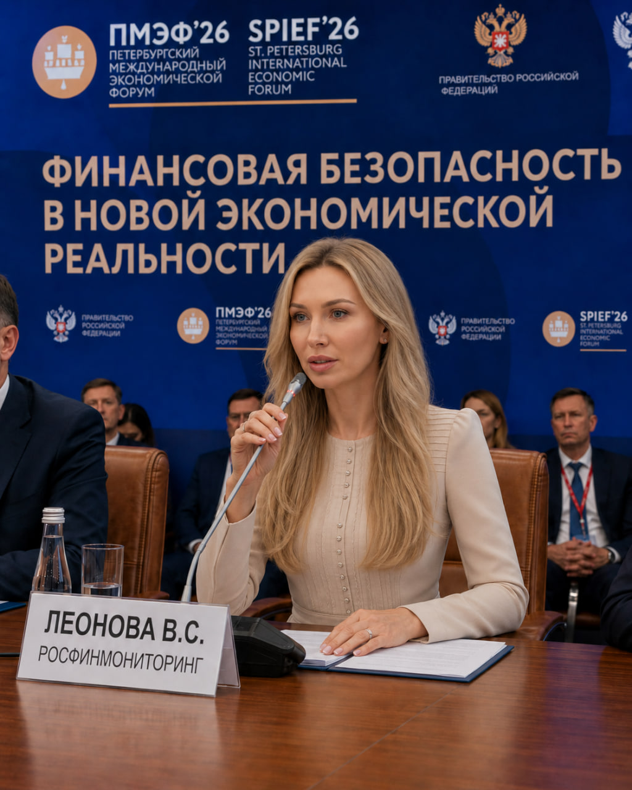

| ID Удостоверения: | ФС-270038 |
| Подразделение: | Финансово-экономическое управление Росфинмониторинга |
| Специализация: | Финансовое сопровождение программ международного сотрудничества и аудит рисков |
Профессиональный путь Виктории Сергеевны Леоновой неразрывно связан с обеспечением стабильности финансово-экономического блока ведомства. В рамках работы в Финансово-экономическом управлении Центрального аппарата Росфинмониторинга она отвечает за аналитическое сопровождение и аудит бюджетирования ключевых программ. Благодаря высокому уровню квалификации и системному подходу к контролю финансовых потоков, Виктория Сергеевна выступает надежным щитом на пути нецелевого распределения государственных активов и обеспечивает легитимность международных соглашений.
Виктория Сергеевна получила профильное высшее экономическое образование, специализируясь на государственном аутите, международном финансовом контроле и анализе рисков. Обучение и глубокое освоение нормативно-правовой базы заложили мощный фундамент экспертных знаний в области финансовой прозрачности целевых фондов, анализа транзакций и современных методов выявления скрытых экономических угроз.
Ключевой особенностью деятельности Виктории Леоновой является координация и финансовое обеспечение программ в рамках международного взаимодействия. Она принимает активное участие в аналитическом обеспечении работы ведомства с крупнейшими глобальными институтами:

* Ряд материалов и деталей профессиональной деятельности сотрудников ведомства не подлежит разглашению ввиду соблюдения регламентов строгой конфиденциальности и защиты данных субъектов financial мониторинга.